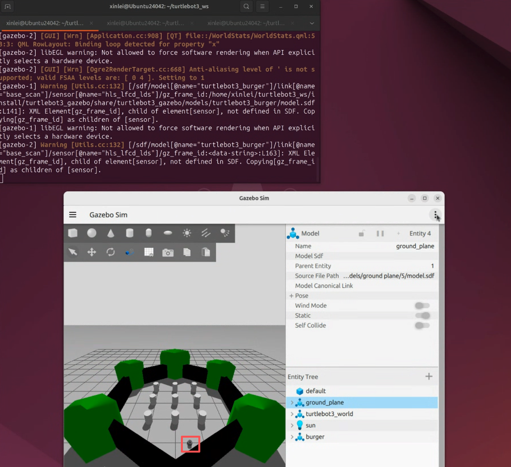
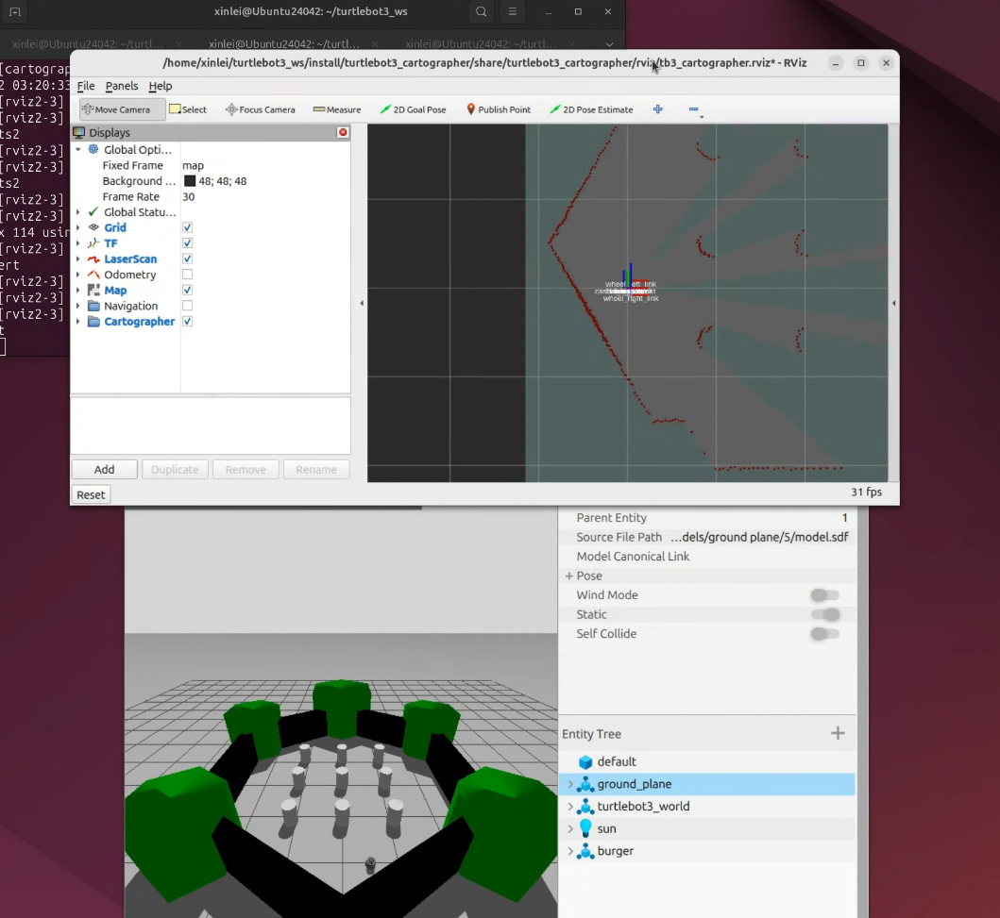
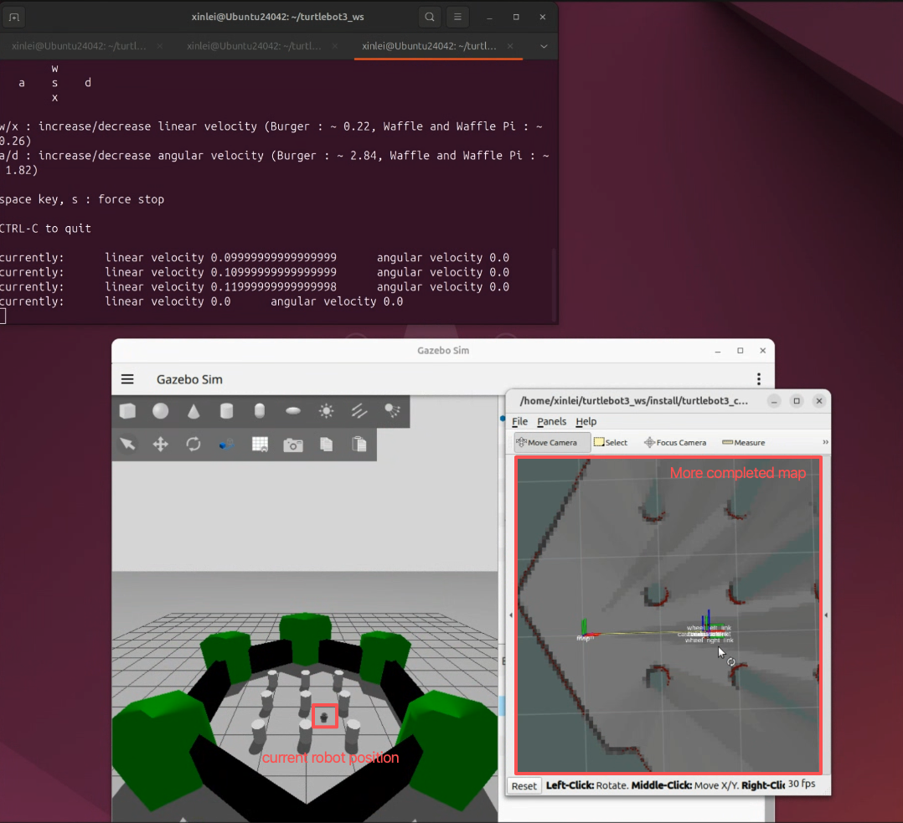
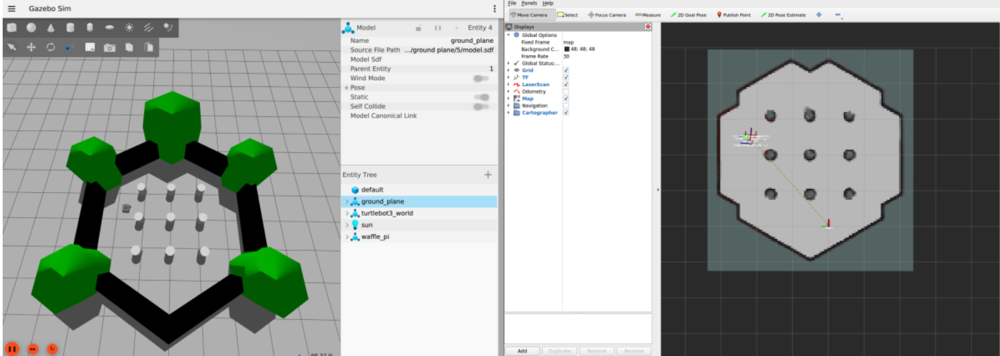
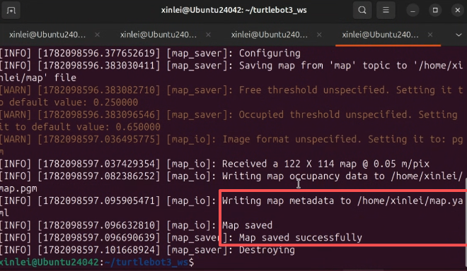
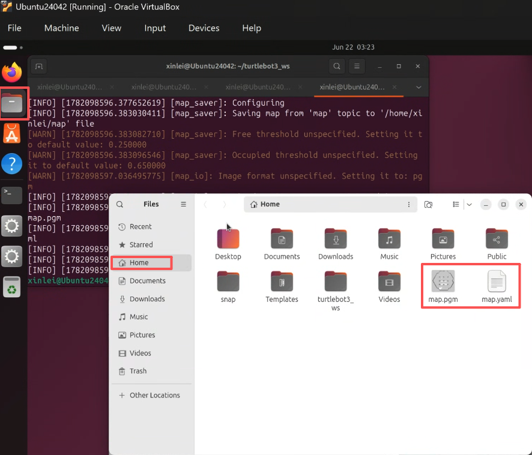
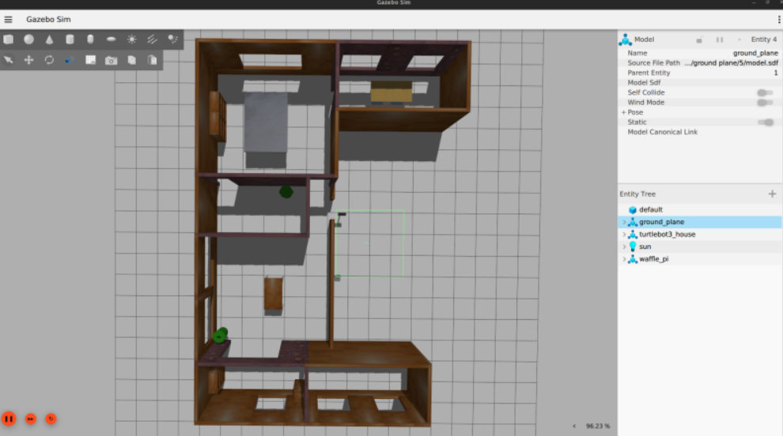

SLAM (Simultaneous Localization and Mapping)
The following steps take approximately 45 minutes to complete.
Before proceeding, make sure you have completed the previous sections.
The following steps are based on the official Turtlebot3 documentation at https://emanual.robotis.com/docs/en/platform/turtlebot3/slam_simulation/. Refer to their website for more details.
As we saw in the previous section, the robot perceives its environment through sensor measurements such as laser scans from its LiDAR. In this section, we will explore one of the most important topics in robotics: SLAM (Simultaneous Localization and Mapping).
Step 1: Launch the Simulator
Open a terminal and run the command below to launch the simulator and spawn the mobile robot. This is the same command we used in the previous section.
$ ros2 launch turtlebot3_gazebo turtlebot3_world.launch.pyAfter launching, you should see the simulator with the mobile robot as shown below.

Step 2: Launch the SLAM Program
Open a new terminal tab and run the command below. This launches the visualization window we used in the previous section, but this time it displays additional mapping information as shown in the figure below.
The robot is now building a map of its environment! In the visualization tool, the light gray areas represent free space where laser beams can pass through unobstructed. The dark green areas are unknown to the robot — at its current position, the laser beams are reflected by walls and pillars, so the robot has no information about what lies behind those obstacles.
$ ros2 launch turtlebot3_cartographer cartographer.launch.py use_sim_time:=True
Step 3: Launch the Teleoperation
Open another terminal tab and run the command below to launch teleoperation, just as we did in the previous section. This allows us to drive the robot around and explore more of the environment.
$ ros2 run turtlebot3_teleop teleop_keyboardAs you teleoperate the robot to new locations, the map becomes more complete and the unknown areas shrink, as shown in the figure below.

Continue teleoperating the robot until the map has minimal unknown areas. An acceptable result is shown below. Do not terminate any running programs — we will save the map in the next step.

Step 4: Save the Map
Open another terminal tab and run the command below to save the map.
$ ros2 run nav2_map_server map_saver_cli -f ~/mapThe terminal will display the save status as shown below.

You can verify the saved files by opening the file explorer and navigating to the Home folder, where the map files are stored.

You now know how to map an environment! This map is essential for the robot to localize itself by aligning its laser scan measurements against the mapped data. A widely used localization algorithm is AMCL (Adaptive Monte Carlo Localization) — you can learn more about it at this link.
Additional: Mapping Other Environments
Repeat the steps above, but replace the Step 1 command with the one below to launch a different environment — a house.
$ ros2 launch turtlebot3_gazebo turtlebot3_house.launch.pyAfter running the command, you should see the house environment as shown below.

Note that saving a new map with the same command from Step 4 will overwrite the previous map files. To keep both maps, rename the existing files before saving a new one.